EV battery
An electric vehicle (EV) battery stores electrical energy that powers the vehicle's motor.
BCA Semester III
303-05 Fundamentals of Machine Learning
A simple guide to learning regression, classification, evaluation, and user input with a battery dataset.
Problem: Can five battery measurements help estimate State of Health and the status written in the dataset?
Objective: Train Linear Regression to estimate SoH (%) and Logistic Regression to classify the dataset's battery status.
Project specifications: The CSV has 10,000 rows and 13 columns. Simple Linear Regression uses charging cycles; Multiple Linear Regression uses five numeric inputs. Both predict SoH (%). Logistic Regression uses five inputs to predict the CSV status. The program shows predicted status, SoH, Healthy probability, and example advice.
Simple Regression
Multiple Regression
Logistic Regression
An electric vehicle (EV) battery stores electrical energy that powers the vehicle's motor.
SoH is a percentage that describes battery condition compared with its earlier or rated condition. The CSV provides a column named SoH_Percent.
Total_Charging_Cycles is the dataset's cycle count. A cycle-counting method can vary between data sources.
Avg_Temperature_C records average temperature in degrees Celsius (°C). Heat and cold can affect battery ageing and performance.
Fast_Charge_Ratio is a unitless ratio from 0 to 1 in this CSV. A larger ratio means more fast charging in the recorded data.
Avg_Discharge_Rate_C is a discharge-rate measurement in C-rate units. Higher C-rate means a faster rate relative to the battery capacity.
Internal_Resistance_Ohm is recorded in ohms (Ω). Resistance is one useful battery characteristic, but it is not one of this project's five model inputs.
Repeated use, time, temperature, and charging and discharging conditions can contribute to ageing. This dataset cannot prove how a real battery will behave.
Battery_Status values from the CSV.| Unit | What I learn in college | Where it is used in this project |
|---|---|---|
| Unit 1 | AI, ML, and deep learning; benefits and applications; life cycle; univariate, bivariate, and multivariate EDA; missing values and outliers; quantitative and qualitative data; discrete, continuous, nominal, and ordinal data; normal and skewed distributions, skewness, and kurtosis. | Define the battery problem; inspect columns and data types; check quality; explore data with charts; explain each life-cycle stage. |
| Unit 2 | Pandas and NumPy; automated EDA tools named in notes (D-Tale, Pandas Profiling, Sweetviz, AutoViz); input and target variables; covariance and correlation; simple regression and y = mx + b; line assumptions; goodness of fit, R², adjusted R², and RSS. | Read and summarize the CSV; use Sweetviz for an automated EDA report; compare features; fit the cycles-only regression line; explain R² and RSS. |
| Unit 3 | Supervised and unsupervised learning; classification and regression; dataset, features, labels, training, validation, and test data; overfitting and underfitting; MSE and MAE. | Use the two supervised tasks; choose targets; split data; compare train/test scores and regression errors. |
| Unit 4 | Linear Regression and OLS; R², MSE, and RMSE; Logistic Regression and sigmoid; binary and multiclass ideas (OVR, softmax); cost and gradient descent; generalization; L1/L2 regularization; cross-validation; accuracy, precision, recall, F1, and confusion matrix. | Train the requested Linear and Logistic Regression models; evaluate the scores; draw a confusion matrix; practise five-fold validation. OVR, softmax, and L1/L2 are course topics but are not extra models in this project. |
Beginner study order: Unit 1 basics and EDA → Unit 2 data handling and regression line → Unit 3 supervised learning and test data → Unit 4 algorithms and evaluation → practise the journal examples and explain this project.
Multiple Linear Regression is marked “not in syllabus / just for knowledge” in the Unit 4 notes. It is included here because the project asks for it.
Source: Kaggle, Electric Vehicle (EV) Battery Degradation and Charge. Local CSV: Dataset/EV_Battery_Dataset.csv.
The file has 10,000 rows and 13 columns. The units below follow the actual column names and values. Text categories and identifiers do not have physical measurement units.
| Actual CSV column | Meaning | Unit or kind | Project use |
|---|---|---|---|
Vehicle_ID | Record identifier | ID; no physical unit | Not a model input |
Car_Model | Vehicle model | Category | Not a model input |
Battery_Type | Battery type | Category | EDA only |
Battery_Capacity_kWh | Battery capacity | kWh | Not a model input |
Vehicle_Age_Months | Vehicle age | months | Model input |
Total_Charging_Cycles | Total charging cycles | cycles | Model input; simple regression input |
Avg_Temperature_C | Average temperature | °C | Model input |
Fast_Charge_Ratio | Share of fast charging | Ratio 0–1; unitless | Model input |
Avg_Discharge_Rate_C | Average discharge rate | C-rate | Model input |
Driving_Style | Driving-style description | Category | EDA only |
Internal_Resistance_Ohm | Internal resistance | ohms (Ω) | EDA only; not a model input |
SoH_Percent | State of Health | % | Regression target only |
Battery_Status | Status written in the CSV | Category | Classification target only |
Classification labels in the file: Healthy = 9,996; Replace Required = 4. The program displays Replace Required as “Not Healthy.” It does not create an 80% label.
This run used Python 3.12.10. The code uses pandas, NumPy, Matplotlib, Seaborn, scikit-learn, and Sweetviz. Sweetviz creates a separate interactive EDA report in HTML.
python -m pip install -r requirements.txt
python -W error -W "ignore:pkg_resources is deprecated as an API:UserWarning" Python_Code/project.pyThe first command installs the listed libraries, including Sweetviz. The second treats warnings as errors except for Sweetviz's known pkg_resources deprecation warning. Start both commands from the main project folder containing Dataset, Python_Code, and Reports.
Automated EDA report: Open the generated Sweetviz report after running the Python program. Sweetviz 2.3.1 needs a numeric or True/False target, so the program makes a temporary Healthy True/False column from Battery_Status for EDA. It does not replace the CSV status label or change model inputs. The report is separate so the project teaching page stays easy to read.
EV_Battery_Health_Prediction/
├── Dataset/
│ └── EV_Battery_Dataset.csv
├── Python_Code/
│ └── project.py
├── Reports/
│ ├── charts and result tables (.png)
│ └── EV_Battery_Project_Report.html
├── Learning_Website/
│ ├── index.html
│ └── images/
├── README.md
├── requirements.txt
└── .gitignoreKeep the dataset and report folders next to the Python project folder. The program uses relative paths. Running the program creates Reports/Sweetviz_EDA_Report.html.
Each small block shows the main idea. The full runnable program is Python_Code/project.py. Code blocks are selectable; use your browser's normal select and copy commands.
Decide what to predict: a numeric SoH value and a status category.
print("Predict battery SoH and dataset status.")
print("This is a learning project, not a safety test.")What this does: States the two questions and prints the safety limit.
Result means: We know the two prediction goals and the safety limit.
Viva line: Problem definition says what the model should predict.
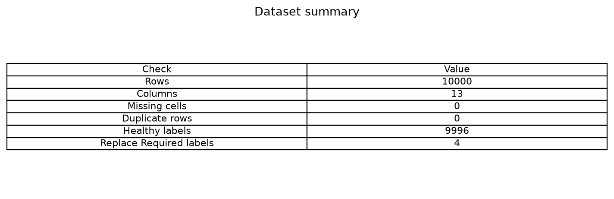
Read the CSV and check its rows, column names, data types, and status labels.
df = pd.read_csv("Dataset/EV_Battery_Dataset.csv")
print(df.shape)
print(df.columns)
print(df["Battery_Status"].value_counts())What this does: Loads the CSV and displays its size, columns, and labels.
Result means: This file has 10,000 rows, 13 columns, and only four “Replace Required” labels.
Viva line: Data collection loads the dataset we will study.
Remove duplicate records and rows missing required inputs or targets. Count IQR outliers, but keep them because unusual values can be valid observations.
df = df.drop_duplicates()
df = df.dropna(
subset=feature_columns + ["SoH_Percent", "Battery_Status"]
)
print("Rows after checks:", len(df))What this does: Removes repeated rows and rows missing a required input or target.
Result means: The run found no missing required values or duplicate rows; it kept all 101 IQR outlier values.
Viva line: Data preparation checks data quality before training.
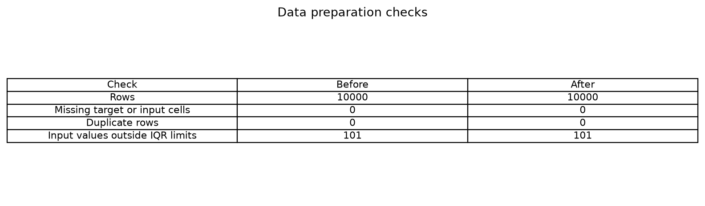
Use summaries, charts, and Sweetviz to understand the data before fitting a model. Sweetviz saves its automated EDA in a separate HTML file.
print(df["SoH_Percent"].describe())
sns.histplot(data=df, x="SoH_Percent", bins=30)
plt.savefig("Reports/soh_histogram.png")
eda_df = df.copy()
eda_df["Healthy"] = df["Battery_Status"] == "Healthy"
eda_report = sv.analyze(eda_df, target_feat="Healthy")
eda_report.show_html(
filepath="Reports/Sweetviz_EDA_Report.html",
open_browser=False
)What this does: Summarizes SoH, saves a histogram, and creates the Sweetviz report. A temporary True/False Healthy target is made from the CSV status because Sweetviz needs a numeric or True/False target.
Result means: EDA shows SoH spread, charging-cycle patterns, correlations, and the rare status group.
Viva line: EDA helps us understand data before modelling.
This temporary EDA column does not replace Battery_Status or become an input to Logistic Regression.
Open the Sweetviz EDA report after running project.py. It is a separate HTML report, not embedded into this learning guide.
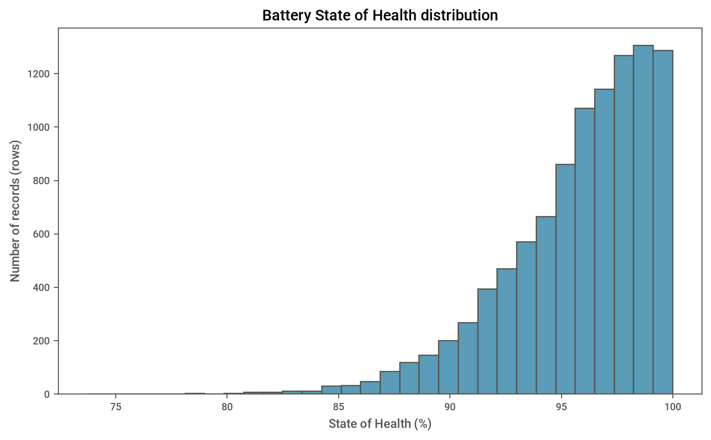
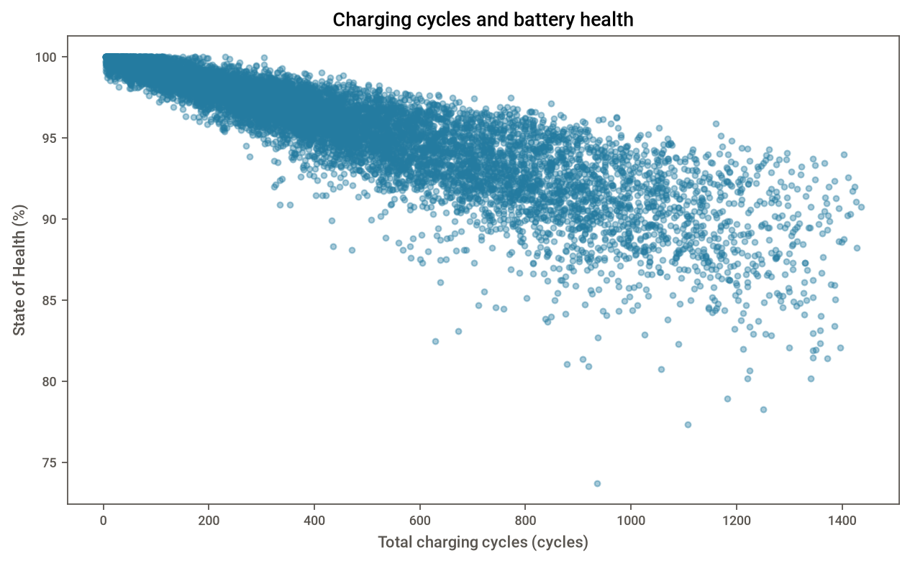
Choose the five requested numeric inputs. SoH is the regression target; Battery_Status is the classification target.
feature_columns = [
"Vehicle_Age_Months", "Total_Charging_Cycles",
"Avg_Temperature_C", "Fast_Charge_Ratio",
"Avg_Discharge_Rate_C"
]
X = df[feature_columns]
X_class = df[feature_columns]
y = df["SoH_Percent"]
y_class = (df["Battery_Status"] == "Healthy").astype(int)What this does: Selects the five input columns and the regression target.
Result means: Both models use the five listed inputs. The classifier does not receive SoH or Battery_Status as an input.
Viva line: Features are model inputs; the target is the answer to predict.
Target leakage means accidentally giving a model the answer, or a shortcut that reveals the answer. Here, SoH is kept out of classification inputs.
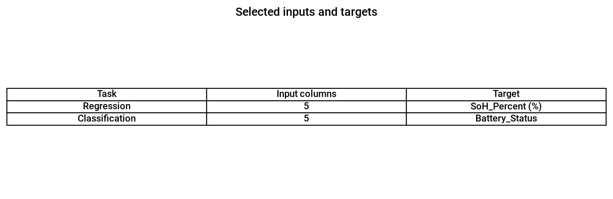
Keep test rows separate so we can check predictions on data the model did not train on.
X_train, X_test, y_train, y_test = train_test_split(
X, y, test_size=0.20, random_state=42
)
X_train_class, X_test_class, y_train_class, y_test_class = train_test_split(
X_class, y_class, test_size=0.20, random_state=42,
stratify=y_class
)What this does: Keeps 20% of the rows aside for a test.
Result means: Regression used 8,000 training rows and 2,000 test rows. Classification kept one rare label in its test group.
Viva line: Training data teaches the model; test data checks it.
Fit simple and multiple Linear Regression, plus Logistic Regression. The classifier scales inputs using training data.
model1 = LinearRegression()
model1.fit(X_train[["Total_Charging_Cycles"]], y_train)
model2 = LinearRegression()
model2.fit(X_train, y_train)
model3 = Pipeline([
("scale", StandardScaler()),
("logistic", LogisticRegression(max_iter=5000,
class_weight="balanced"))
])
model3.fit(X_train_class, y_train_class)What this does: Fits two Linear Regression models and the Logistic Regression classifier.
Result means: The learned simple equation is SoH (%) = -0.008994 × cycles + 99.923332.
Viva line: Training finds the model patterns from the training examples.
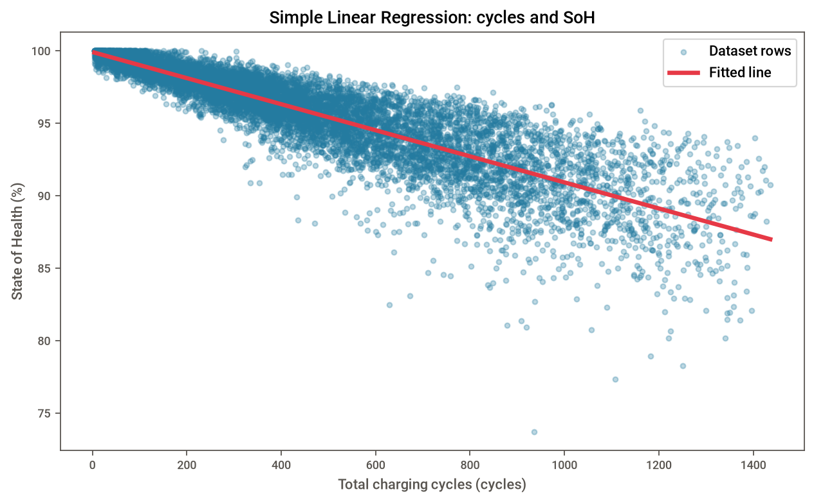
Regression uses MAE, MSE, RMSE, R², and RSS. Classification uses accuracy, precision, recall, F1, and a confusion matrix. Five-fold cross-validation repeats a check across five groups.
folds = KFold(n_splits=5, shuffle=True, random_state=42)
test_prediction = model2.predict(X_test)
print("MAE:", mean_absolute_error(y_test, test_prediction))
print("R2:", r2_score(y_test, test_prediction))
cv_scores = cross_val_score(
LinearRegression(), X, y, cv=folds, scoring="r2"
)
class_cv_scores = cross_val_score(
model3, X_class, y_class, cv=folds, scoring="accuracy"
)What this does: Measures errors and R², then repeats the regression check over five folds.
Result means: The measured test and fold scores are shown in the Results section. Similar train and test scores can be reassuring, but do not prove real-world safety.
Viva line: Evaluation measures how close predictions are to known answers.
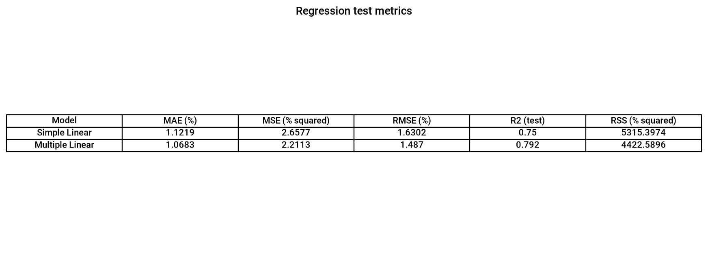
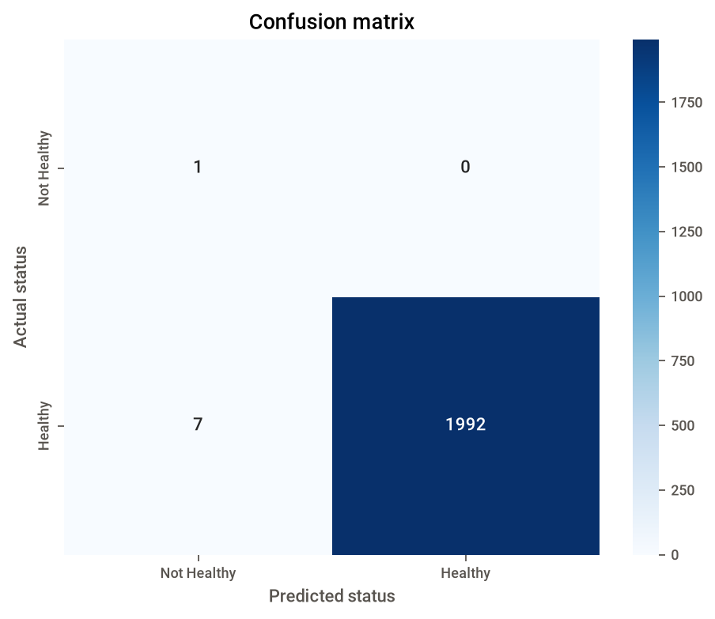
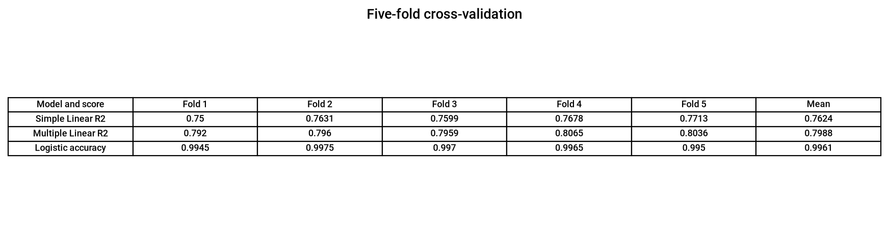
Check a held-out row: the real SoH is available for comparison after prediction.
sample = X_test.iloc[[0]]
sample_prediction = model2.predict(sample)[0]
print("Predicted SoH (%):", sample_prediction)What this does: Predicts SoH for one test row the model did not train on.
Result means: For the selected test row, actual SoH was 97.31% and predicted SoH was 95.41%.
Viva line: Prediction uses a trained model to estimate an answer for an input.
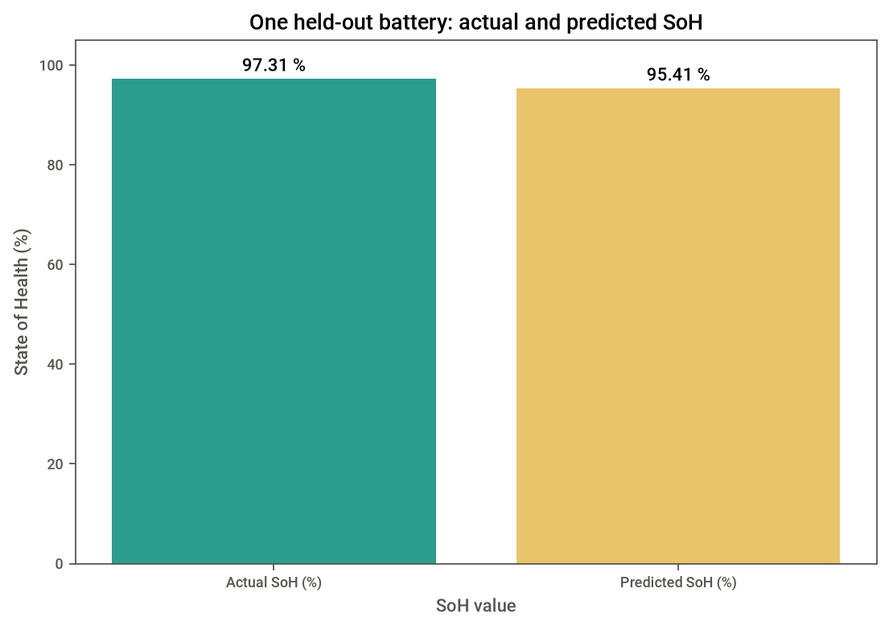
The console asks for five values, predicts status and SoH, and prints the probability of Healthy.
age_input = float(input("Vehicle age (months): "))
cycles_input = float(input("Total charging cycles (cycles): "))
temperature_input = float(input("Average temperature (°C): "))
charge_input = float(input("Fast-charge ratio (0 to 1): "))
discharge_input = float(input("Average discharge rate (C-rate): "))
new_battery = pd.DataFrame(
[[age_input, cycles_input, temperature_input,
charge_input, discharge_input]],
columns=feature_columns
)
status_prediction = model3.predict(new_battery)[0]
healthy_probability = model3.predict_proba(new_battery)[0][1] * 100
soh_prediction = np.clip(model2.predict(new_battery)[0], 0, 100)What this does: Asks the user for all five model inputs with units.
Result means: The program turns user-entered values into model inputs. Its advice is only an educational example.
Viva line: Deployment lets a user give inputs to a trained model.
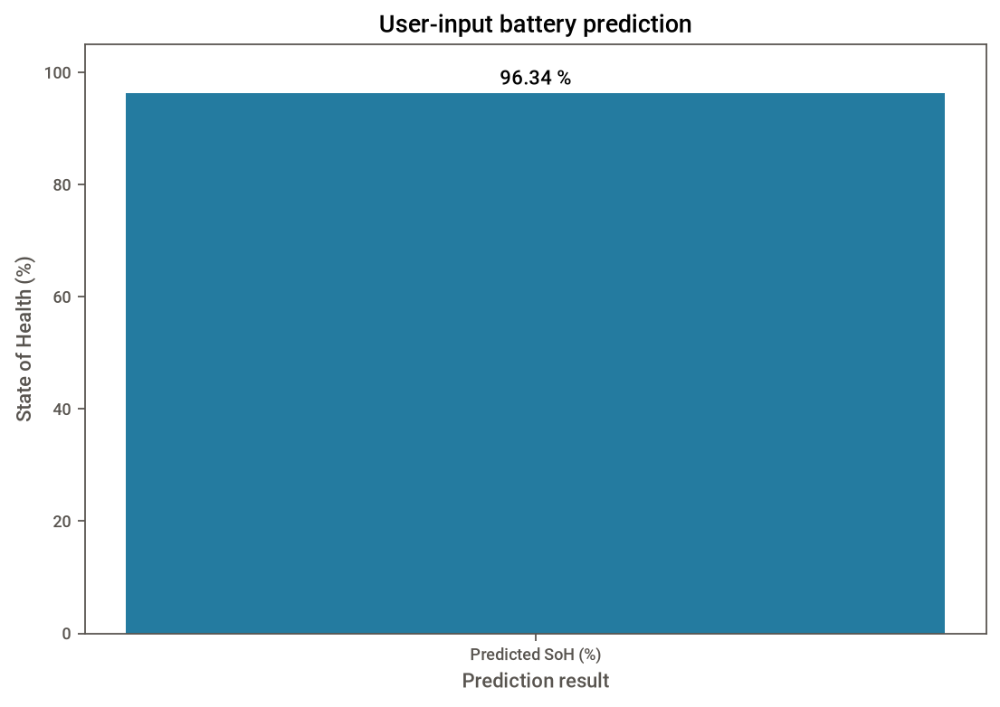
In a real approved project, compare future predictions with trusted measured outcomes. Check mistakes, changed data, and class balance before any update.
print("Compare future predictions with measured outcomes.")
print("Ask the teacher before using another dataset.")What this does: Reminds us to check future results and get approval for a new dataset.
Result means: Monitoring is a future project task; this example has no real vehicle or safety monitoring.
Viva line: Monitoring checks whether model behaviour changes over time.
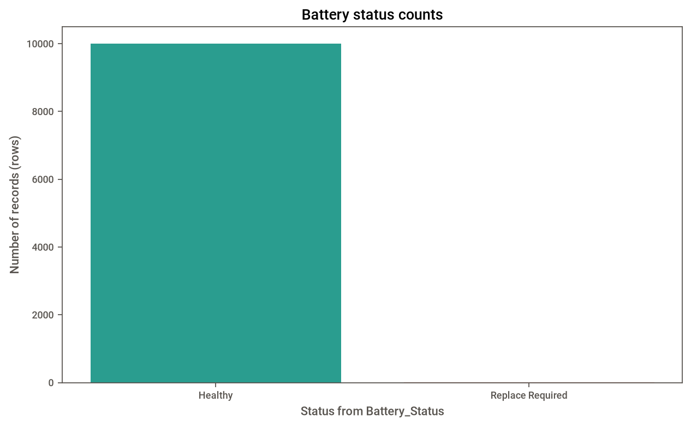
The following values came from running Python_Code/project.py on the supplied CSV. They are not invented. Regression errors are measured in SoH percentage points (or squared percentage points for MSE and RSS).
| Model | MAE (%) | MSE (%²) | RMSE (%) | R² | RSS (%²) |
|---|---|---|---|---|---|
| Simple Linear: cycles only | 1.1219 | 2.6577 | 1.6302 | 0.7500 | 5315.3974 |
| Multiple Linear: five inputs | 1.0683 | 2.2113 | 1.4870 | 0.7920 | 4422.5896 |
For these test rows, the multiple-input model has lower error and a higher R². This does not prove performance on real batteries.
| Model | Train score | Test score |
|---|---|---|
| Simple Linear Regression (R²) | 0.7656 | 0.7500 |
| Multiple Linear Regression (R²) | 0.8009 | 0.7920 |
| Logistic Regression (accuracy) | 0.9951 | 0.9965 |
| Metric | Value |
|---|---|
| Accuracy | 0.9965 |
| Precision for Not Healthy | 0.1250 |
| Recall for Not Healthy | 1.0000 |
| F1 for Not Healthy | 0.2222 |
Confusion matrix: rows are actual labels; columns are predicted labels. The order is Not Healthy, then Healthy.
| Actual \ Predicted | Not Healthy | Healthy |
|---|---|---|
| Not Healthy | 1 | 0 |
| Healthy | 7 | 1992 |
| Model and score | Fold 1 | Fold 2 | Fold 3 | Fold 4 | Fold 5 | Mean |
|---|---|---|---|---|---|---|
| Simple Linear R² | 0.7500 | 0.7631 | 0.7599 | 0.7678 | 0.7713 | 0.7624 |
| Multiple Linear R² | 0.7920 | 0.7960 | 0.7959 | 0.8065 | 0.8036 | 0.7988 |
| Logistic accuracy | 0.9945 | 0.9975 | 0.9970 | 0.9965 | 0.9950 | 0.9961 |
Five-fold scores measure repeated splits. Classification CV uses shuffled KFold accuracy. Four rare rows cannot place at least one Not Healthy example in all five test folds, so accuracy still hides some rare-label problems.
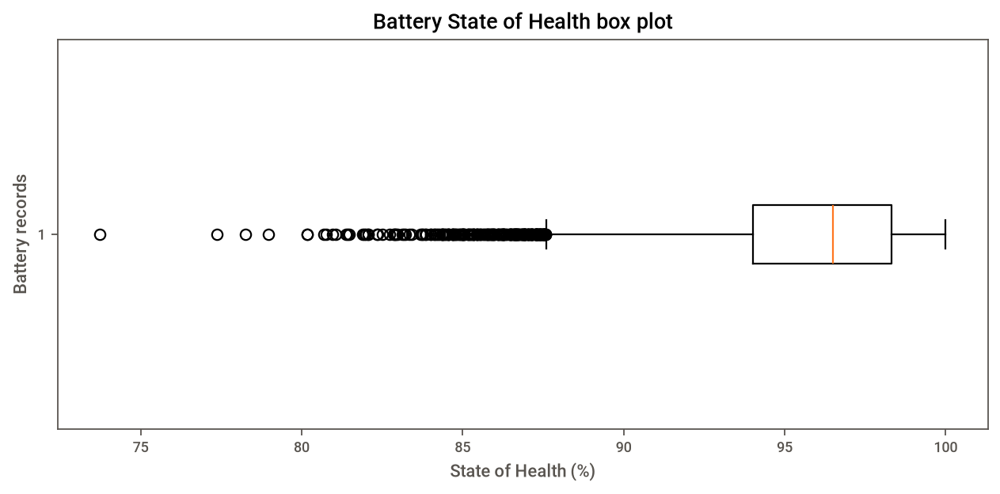
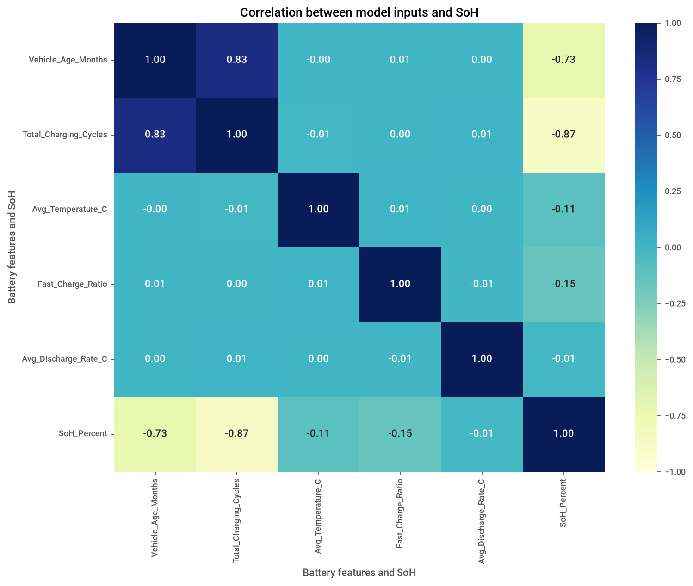
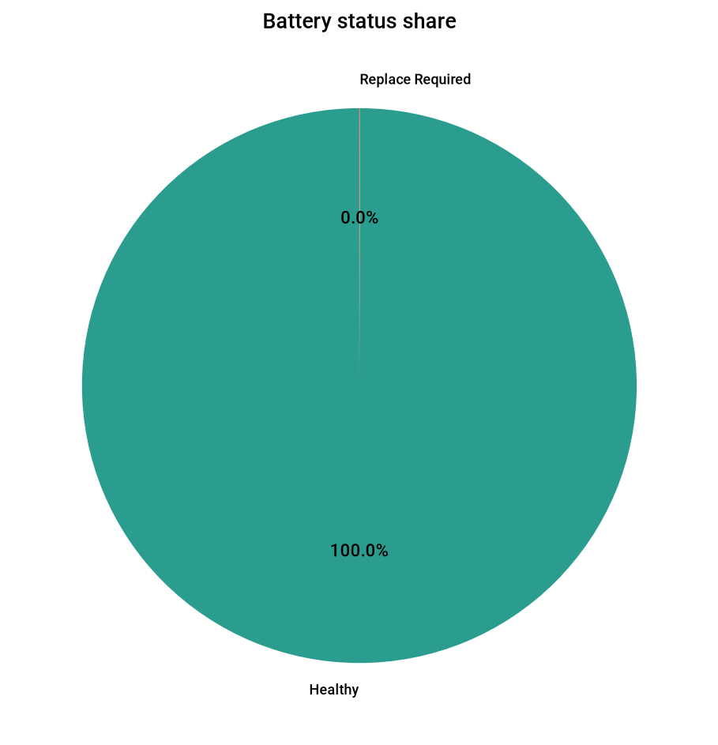
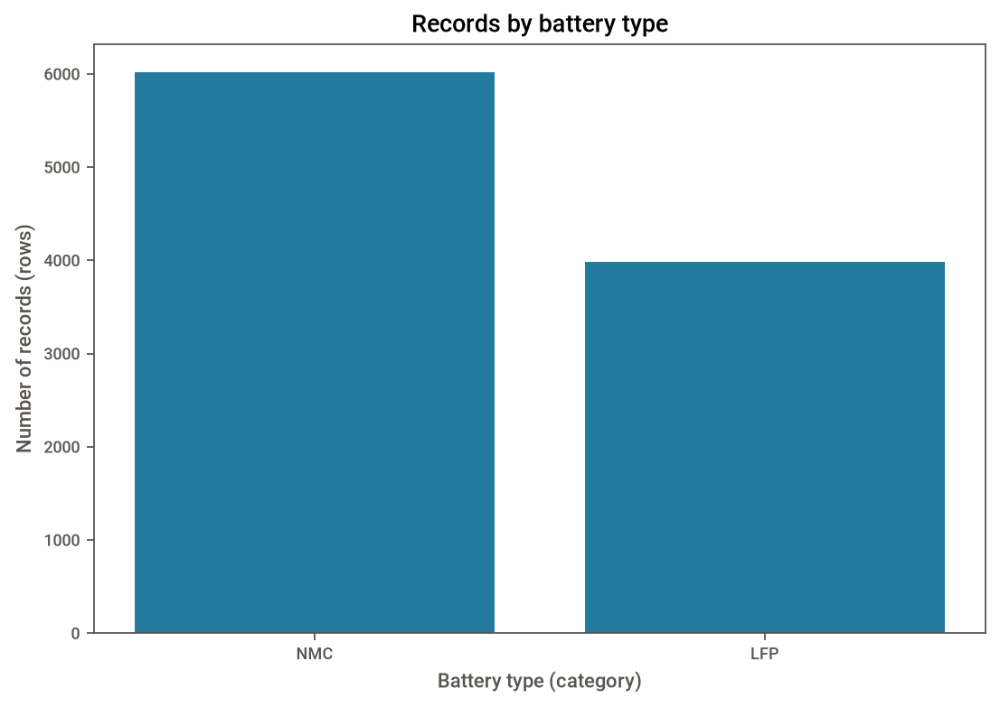
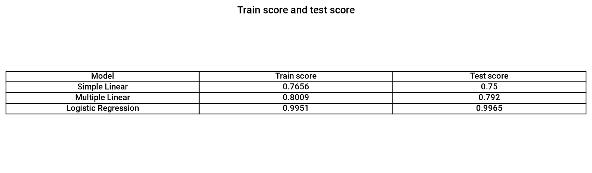
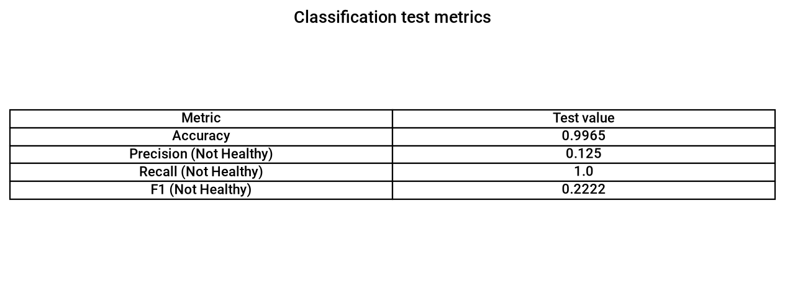
The program asks for five measurements: age, cycles, temperature, fast-charge ratio, and discharge rate. These column names and units come from the CSV. It then prints a status, predicted SoH, probability of Healthy, and simple example advice.
One actual run used: age 48 months; 400 cycles; 25 °C; fast-charge ratio 0.49; discharge rate 1.49 C-rate.
Battery status: Healthy
Predicted State of Health: 96.34 %
Probability of Healthy: 100.00 %
Advice: keep using
Learning project on synthetic data; not for real safety decisions.Replace Required label. More approved, representative examples are needed for a better classification test.SoH_Percent as a classifier input, to avoid target leakage.These are study-time estimates, not measured project timings. Total suggested learning time: about 3 hours 50 minutes.
SoH_Percent.m is the slope and b is the intercept. Together they describe a straight line.SoH_Percent as an input for classification.Create an empty repository on GitHub first. Replace the example address below with your own repository address. Run commands from the project folder.
git initgit statusgit add .git commit -m "Add EV battery health project"git branch -M main
git remote add origin https://github.com/USERNAME/REPOSITORY.gitgit push -u origin mainDo not upload passwords, tokens, private information, or files that you do not have permission to share.
Battery_Status labels, not a made-up 80% label.Learning project only. It does not determine whether a real battery is safe to use.